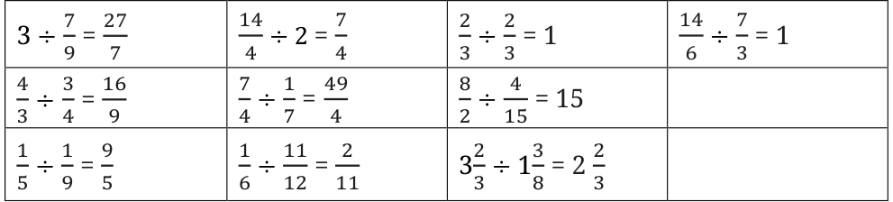
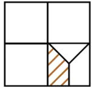

Solutions — Figure it Out (Page 196)
- Evaluate the following:

- For each of the questions below, choose the expression that describes the solution. Then simplify it.
- Maria bought 8 m of lace to decorate the bags she made for school. She used \(\frac{1}{4}\) m for each bag and finished the lace. How many bags did she decorate?
Ans: \(8 \div \frac{1}{4}\)
- \(\frac{1}{2}\) meter of ribbon is used to make 8 badges. What is the length of the ribbon used for each badge?
Ans: \(\frac{1}{2} \div 8\)
- A baker needs \(\frac{1}{6}\) kg of flour to make one loaf of bread. He has 5 kg of flour. How many loaves of bread can he make?
Ans: \(5 \div \frac{1}{6}\)
- Maria bought 8 m of lace to decorate the bags she made for school. She used \(\frac{1}{4}\) m for each bag and finished the lace. How many bags did she decorate?
- If \(\frac{1}{4}\) kg of flour is used to make 12 rotis, how much flour is used to make 6 rotis?
Ans: \(\frac{1}{8}\) kg
- Pāṭīgaṇita, a book written by Sridharacharya in the 9th century CE, mentions this problem: "Friend, after thinking, what sum will be obtained by adding together \(1 \div \frac{1}{6}\), \(1 \div \frac{1}{10}\), \(1 \div \frac{1}{13}\), \(1 \div \frac{1}{9}\), and \(1 \div \frac{1}{2}\)". What should the friend say?
Ans: 40
- Mira is reading a novel that has 400 pages. She read \(\frac{1}{5}\) of the pages yesterday and \(\frac{3}{10}\) of the pages today. How many more pages does she need to read to finish the novel?
Ans: 200 pages.
- A car runs 16 km using 1 litre of petrol. How far will it go using \(2\frac{3}{4}\) litres of petrol?
Ans: 44 km.
- Amritpal decides on a destination for his vacation. If he takes a train, it will take him \(5\frac{1}{6}\) hours to get there. If he takes a plane, it will take him \(\frac{1}{2}\) hour. How many hours does the plane save?
Ans: \(4\frac{2}{3}\) hours
- Mariam’s grandmother made a cake. Mariam and her cousins finished \(\frac{4}{5}\) of the cake. The remaining cake was shared equally by Mariam’s three friends. How much of the cake did each friend get?
Ans: \(\frac{1}{15}\) of the whole cake.
- Choose the option(s) describing the product of \(\left(\frac{565}{465} \times \frac{707}{676}\right)\):
Ans: (a), (c) and (e) are correct.
- What fraction of the whole square is shaded?

Ans: \(\frac{3}{32}\) of the whole square.
- A colony of ants set out in search of food. As they search, they keep splitting equally at each point (as shown in the Fig. 8.7) and reach two food sources, one near a mango tree and another near a sugarcane field. What fraction of the original group reached each food source?
Ans: Mango tree \(= \frac{29}{32}\) and Sugarcane field \(= \frac{3}{32}\)
- What is \(1 - \frac{1}{2}\)? Ans: \(\frac{1}{2}\)
\(\left(1 - \frac{1}{2}\right) \times \left(1 - \frac{1}{3}\right)\)? Ans: \(\frac{1}{3}\)
\(\left(1 - \frac{1}{2}\right) \times \left(1 - \frac{1}{3}\right) \times \left(1 - \frac{1}{4}\right) \times \left(1 - \frac{1}{5}\right)\)? Ans: \(\frac{1}{5}\)
\(\left(1 - \frac{1}{2}\right) \times \left(1 - \frac{1}{3}\right) \times \left(1 - \frac{1}{4}\right) \times \left(1 - \frac{1}{5}\right) \times \left(1 - \frac{1}{6}\right) \times \left(1 - \frac{1}{7}\right) \times \left(1 - \frac{1}{8}\right) \times \left(1 - \frac{1}{9}\right) \times \left(1 - \frac{1}{10}\right)\)? Ans: \(\frac{1}{10}\)
Make a general statement and explain.
Ans: \(\left(1 - \frac{1}{2}\right) \times \left(1 - \frac{1}{3}\right) \times \left(1 - \frac{1}{4}\right) \times \left(1 - \frac{1}{5}\right) \cdots \left(1 - \frac{1}{n}\right) = \frac{1}{n}\)